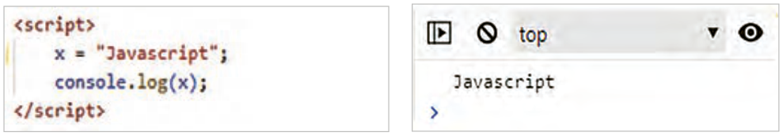
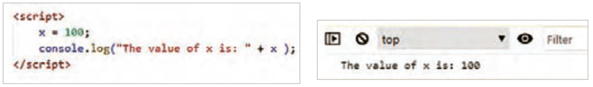
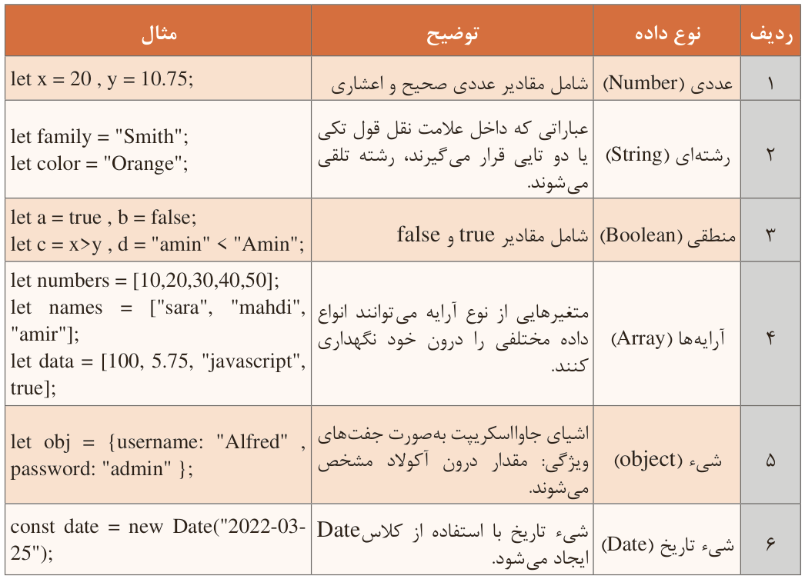
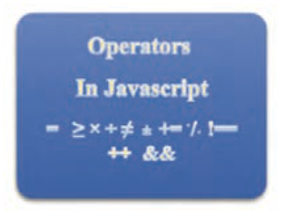

تعریف متغیرها میتواند بهصورت خودکار نیز انجام شود. تعریف خودکار متغیر زمانی انجام میشود که یک متغیر مقداردهی شود.
اصول نامگذاری متغیرها
نام متغیر میتواند حاوی حروف الفبای انگلیسی، اعداد، علامت $ و زیرخط (_) باشد، اما در ابتدای نام متغیر نباید از اعداد استفاده شود.
جاوااسکریپت نسبت به کوچکی و بزرگی حروف حساس است، بنابراین اسامی price و Price و PRICE سه متغیر متفاوت هستند.
کلمات رزرو شدۀ جاوااسکریپت (که معنای خاصی دارند)، نباید بهعنوان نام متغیر استفاده شوند، مانند let و var، if، for و ...
جاوااسکریپت امکان تعریف متغیرها را در یک خط نیز فراهم میکند، اما در پایان هر تعریف متغیر، باید از علامت کاما برای جداسازی استفاده شود.
let firstName = "Sara", lastName = "Jones", studentId = "1234567";
مقداردهی به متغیرها توسط عملگر انتساب (=) انجام میشود. در صورتیکه مقداردهی متغیر انجام نشود، مقدار آن تعریف نشده یا (Undefined) خواهد بود.
صفحه ۱۹۹
نمایش مقدار متغیرها و رشتهها
برای نمایش مقدار یک متغیر در کنسول مرورگر از دستور console به شکل ۵ استفاده میشود:

شکل ۵
با توجه به حساسیت جاوااسکریپت نسبت به کوچکی و بزرگی حروف، نوشتن دستور console.log(X) باعث نمایش پیغام خطای زیر میشود:
شکل ۶
برای نمایش یک رشته متنی در کنسول یا صفحه وب، از علائم نقل قول در اطراف متن استفاده میشود، اما متغیرها نیازی به این علائم ندارند. در مثال زیر یک عبارت متنی بههمراه مقدار متغیر x درون کنسول نمایش داده شده است.

شکل ۷
در اینجا عملگر + برای چسباندن دو عبارت به یکدیگر استفاده شده است. بسته به نوع دادهها، این عملگر میتواند به عنوان عملگر محاسباتی جمع یا الحاق رشتهها عمل کند.
صفحه ۲۰۰
انواع داده
در یک زبان برنامهنویسی، متغیرها میتوانند انواع دادههای مختلفی را درون خود ذخیره کنند. برای ذخیره هر نوع داده میزان حافظه متفاوتی مورد نیاز است؛ انواع دادهها به زبانهای برنامهنویسی امکان میدهند که از حافظه بهصورت مؤثرتری استفاده کنند. همچنین برنامهنویسان میتوانند دادهها را به شکلی منطقیتر و منسجمتر سازماندهی کنند. جدول ۱۵ انواع دادههای قابل استفاده در جاوااسکریپت را نمایش میدهد.
جدول ۱۵: انواع داده در جاوااسکریپت

صفحه ۲۰۱
تبدیل نوع دادهها
جاوااسکریپت امکان تبدیل نوع داده متغیرها را به دو روش امکانپذیر میسازد: تبدیل ضمنی (Implicit) و صریح (Explicit). وقتی تبدیل نوع داده متغیر بهصورت خودکار انجام شود، تبدیل ضمنی صورت گرفته است.
صفحه ۲۰۲
تبدیل صریح نوع داده توسط توابع داخلی جاوااسکریپت انجام میپذیرد. توابع مربوط به تبدیل داده شامل parseInt()، parseFloat()، Number()، String() و Boolean() است که نوع داده آرگومان ورودی را به نوع داده صحیح، اعشاری، عددی، رشتهای و منطقی تبدیل میکنند.
عملگرها (Operators)

شکل ۸
در زبانهای برنامهنویسی عملگرها برای انجام عملیات روی متغیرها و مقادیر بهکار میروند مقادیری که یک عملگر روی آنها عمل میکند، عملوند (Operand) نامیده میشوند. در عبارت z = x + y علائم + و =عملگر هستند و حروف x، y و z عملوند محسوب میشوند. در این بخش به شرح عملگرهای جاوااسکریپت پرداخته میشود.
Page 198
Defining variables can also be done automatically. Automatic variable definition happens when a variable is given a value.
Principles of naming variables
The name of a variable can contain English letters, numbers, the $ sign and the underscore (_), but numbers must not be used at the start of the variable name.
JavaScript is case-sensitive, so the names price, Price and PRICE are three different variables.
JavaScript's reserved words (which have a special meaning) must not be used as variable names, such as let and var, if, for and so on.
JavaScript also makes it possible to define variables in one line, but at the end of each variable definition a comma must be used to separate them.
let firstName = "Sara", lastName = "Jones", studentId = "1234567";
Giving values to variables is done with the assignment operator (=). If a variable is not given a value, its value will be undefined (Undefined).
Page 199
Showing the value of variables and strings
To show the value of a variable in the browser console, the console statement is used as in form 5:
Figure 5
Considering that JavaScript is case-sensitive, writing the statement console.log(X) causes the following error message to be shown:
Figure 6
To show a text string in the console or on the web page, quotation marks are used around the text, but variables do not need these marks. In the following example a text phrase together with the value of the variable x is shown in the console.
Figure 7
Here the + operator is used to stick two phrases to each other. Depending on the type of the data, this operator can act as the arithmetic addition operator or as string concatenation.
Page 200
Data types
In a programming language, variables can store different data types inside them. Storing each data type needs a different amount of memory; data types let programming languages use memory more effectively. Programmers can also organise data in a more logical and coherent way. Table 15 shows the data types that can be used in JavaScript.
Table 15: Data types in JavaScript
Page 201
Converting data types
JavaScript makes converting the data type of variables possible in two ways: implicit and explicit conversion. When the data type of a variable is converted automatically, an implicit conversion has happened.
Page 202
Explicit conversion of the data type is done by JavaScript's built-in functions. The conversion functions include parseInt(), parseFloat(), Number(), String() and Boolean(), which convert the data type of the input argument to integer, decimal, numeric, string and logical types.
Operators
Figure 8
In programming languages, operators are used to do operations on variables and values; the values an operator works on are called operands. In the expression z = x + y the signs + and = are operators and the letters x, y and z are operands. In this section the JavaScript operators are described.